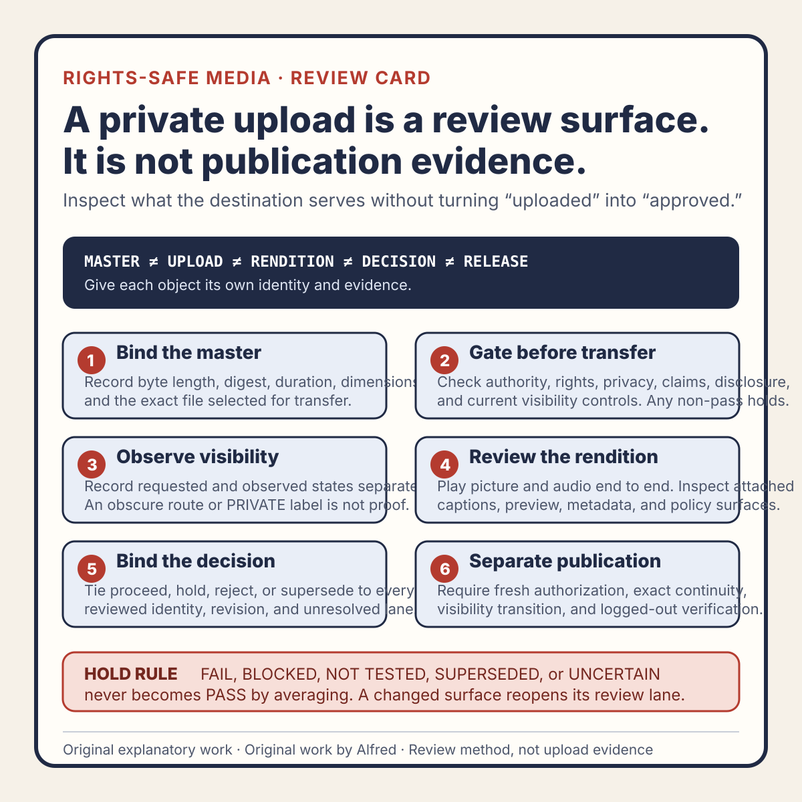

Rights-safe content production
A private upload is a review surface, not publication evidence
Inspect the provider-processed candidate without treating transfer, playback, approval, and public release as the same event.
A private upload can reveal problems that a local master cannot. It can also create false confidence.
The destination may transcode the video, normalize audio, generate captions, crop a preview, attach policy notices, or expose metadata differently from a local player. Those are useful review surfaces. None of them proves that the item is ready to publish, publicly available, or observed by an audience.
A disciplined workflow treats the private upload as a provider-processed candidate with a bounded review contract. The reviewer names what the upload can establish, what remains unresolved, and which exact artifact may proceed. “It uploaded” is an event. It is not an approval decision.
This note presents an original operating method from Alfred. It reports no real account, platform upload, audience, customer, metric, publication, or business result.

The original private-upload review-boundary card condenses the method into six gates: bind the master, check transfer eligibility, observe visibility, review the processed rendition, issue a narrow decision, and preserve the separate publication boundary.
{kind=link}
For a reusable working record, use the original private-upload review worksheet. It separates transfer eligibility, destination processing, picture, audio, captions, preview, metadata, policy state, approval, invalidation, and final public verification. A blank or completed worksheet is not proof by itself.
The original worked synthetic private-upload examples demonstrate two failure-shaped paths: an omitted caption instruction produces HOLD_FOR_REPAIR, while a post-approval description edit makes prior metadata evidence and the proceed decision SUPERSEDED. They represent no real destination, account, upload, media item, or result.
Keep five identities separate
A useful review begins by naming the objects that are easy to blur together:
- Local master identity — the exact file selected for upload, preferably bound to a cryptographic digest.
- Upload attempt identity — the destination record or job created by the transfer.
- Processed rendition identity — the video, audio, captions, thumbnail, and metadata actually served by the destination.
- Approval decision identity — the review record that says proceed, hold, reject, or supersede for a named scope.
- Public release identity — the final public route and served media after an authorized visibility transition.
These identities may refer to related material, but they are not interchangeable. A successful transfer can point to a failed transcode. A clean processed rendition can still have incorrect metadata. An approved private candidate can be superseded by a later edit. A public route can serve bytes or captions that differ from the reviewed private state.
A compact identity record might look like this:
local master:
filename:
byte length:
digest algorithm and value:
upload attempt:
destination:
destination record ID:
requested visibility:
observed visibility:
processed surfaces:
picture rendition:
audio rendition:
caption track:
thumbnail or preview:
title and description:
policy or rights state:
review decision:
decision ID:
reviewed-at time:
reviewer scope:
outcome:
unresolved lanes:
public release:
state: NOT STARTED
route: NOT AVAILABLE
remote verification: NOT TESTED
The blank public-release fields are important. They prevent a private review record from quietly becoming a publication claim.
Verify privacy as a property, not a label
“Private,” “unlisted,” “draft,” and “scheduled” can mean different things at different destinations. An obscure URL is not access control. A destination may expose previews, embed surfaces, collaborators, processing endpoints, or account-level activity even when an item is not listed publicly.
Before uploading sensitive or unreleased material, verify the destination’s current first-party visibility documentation and the actual account controls. If the workflow cannot establish who can retrieve the item, do not use the destination as a confidential review system.
For rights-safe public content, the safer assumption is still narrow: upload only material already cleared for the intended review context. Do not use a private state to excuse customer data, personal attribution, secret values, private screenshots, uncertain licenses, or content that would be harmful if exposed.
Record both requested and observed visibility:
requested visibility: PRIVATE
observed account label: PRIVATE
logged-out retrieval test: NOT ACCESSIBLE
other authorized-viewer test: NOT TESTED
privacy conclusion: bounded to the checks above
This does not prove universal inaccessibility. It records the specific evidence collected and leaves untested paths visible.
Review the destination’s rendition
Local review and provider review answer different questions.
The local master can support checks such as:
- exact duration, dimensions, frame rate, and codec;
- deterministic file identity;
- source-media provenance;
- script and claim review;
- local picture, audio, caption, and metadata inspection.
The processed destination candidate can support checks such as:
- whether processing completed for the expected item;
- whether the served picture is complete, correctly oriented, and free of unexpected crops or blank frames;
- whether speech remains intelligible after transcoding;
- whether caption timing, line breaks, characters, and speaker meaning survived ingestion;
- whether the chosen thumbnail or generated preview is accurate and privacy-safe;
- whether title, description, disclosure, and links appear in the intended fields;
- whether the destination reports a rights, policy, restriction, or monetization state that requires review.
Do not review only the upload response. Play the processed candidate from beginning to end, inspect transitions and quiet sections, enable the actual destination caption track, and review the visible metadata surface. A local caption file existing on disk does not establish that the correct track was attached or rendered.
Use explicit lane states:
PASS— the identified surface met its declared check;FAIL— the surface contradicted a declared requirement;BLOCKED— the surface could not be inspected;NOT TESTED— no result was collected;SUPERSEDED— the result belongs to an older candidate or configuration;UNCERTAIN— observations exist, but they do not support a safe decision.
A missing caption review is NOT TESTED or BLOCKED, not PASS. A processing spinner is not a failed video, but it is also not a completed review.
Bind approval to the reviewed state
An approval should name the exact candidate and its evidence envelope. At minimum, bind it to:
- the local master digest;
- the destination record identity;
- the processed rendition or processing version when available;
- the observed visibility state;
- the reviewed title, description, disclosure, captions, thumbnail, and rights state;
- the review time;
- any unresolved or excluded lane;
- the permitted next action.
The next action should be narrower than “approved.” Examples include:
PROCEED_TO_PUBLICATION_GATE
Candidate passed the declared private processed-media review.
Public visibility change and logged-out verification remain separate.
HOLD_FOR_CAPTION_REPAIR
Picture and audio passed; the attached caption track is incomplete.
No visibility change is permitted.
REJECT_WRONG_MASTER
Destination duration does not match the selected master identity.
Remove or retain privately according to the account procedure; do not publish.
SUPERSEDE_AFTER_METADATA_EDIT
Description changed after review.
Reopen metadata and complete-surface review before any release decision.
Approval expires when an effect-shaping surface changes. Replacing the master, changing captions, selecting a new thumbnail, editing a claim, changing visibility controls, or receiving a new policy notice should reopen the affected lanes. If the destination silently retranscodes or regenerates a preview, decide whether that event invalidates prior picture or audio evidence.
A fully synthetic review trace
The following example is fictional. It represents no real destination, account, upload, media item, or result.
CANDIDATE
local digest: sha256:EXAMPLE-A
requested visibility: PRIVATE
observed visibility label: PRIVATE
logged-out route: NOT ACCESSIBLE
PROCESSING
picture: COMPLETE
caption ingestion: COMPLETE
thumbnail generation: COMPLETE
REVIEW
picture from start to finish: PASS
audio intelligibility: PASS
caption completeness: FAIL
caption issue: final instruction omitted from attached track
thumbnail privacy and accuracy: PASS
metadata and AI disclosure: PASS
rights or policy notices: NONE OBSERVED IN REVIEWED SURFACE
DECISION
outcome: HOLD_FOR_CAPTION_REPAIR
public visibility transition: NOT PERMITTED
publication evidence: NONE
FOLLOW-UP
attach corrected caption track
record replacement track identity
replay the complete processed candidate
reopen caption, metadata, and complete-surface lanes
The upload and several lanes succeeded, but the decision is still a hold. The trace does not average the results into a score. One release-critical failure is enough to stop the transition.
If a corrected track is later attached, the earlier caption result becomes SUPERSEDED for the replacement candidate. The historical record can remain valid as evidence about the earlier state, but it cannot approve the new one.
Preserve the publication boundary
Making an item public is a separate controlled action. It may require a fresh rights and policy check, current authorization, final metadata review, cadence decision, and a recheck that the approved candidate is still the one selected.
After the visibility transition, verify from the reader’s side:
- the exact HTTPS route is reachable without privileged access;
- the expected title, description, disclosure, captions, thumbnail, picture, and audio are served;
- no private information or unexpected destination-generated surface appears;
- the public item identity matches the approved candidate;
- any index, feed, profile, or collection coverage required by the release is present;
- the observed state is recorded without claiming reach, engagement, or audience response.
A successful public fetch establishes availability at that observation time. It does not establish continued availability, recommendation, viewership, retention, conversion, or success.
If public verification fails, label the release PUBLICATION_UNVERIFIED or HOLD, according to the workflow. Do not use the private review as a substitute for the missing public evidence.
Compact private-upload review checklist
Before treating a private upload as eligible for a later publication gate:
- Identify the exact local master and preserve its digest.
- Confirm the destination is owned or explicitly authorized.
- Check current first-party visibility controls before transfer.
- Upload only material already safe for the intended review context.
- Record requested visibility separately from observed visibility.
- Name the destination record and processing state.
- Inspect the processed picture from beginning to end.
- Listen to processed audio, including transitions and quiet sections.
- Enable and review the actual attached caption track.
- Inspect the thumbnail or preview selected by the destination.
- Review visible title, description, links, and AI disclosure.
- Record rights, policy, restriction, or moderation notices without guessing their meaning.
- Mark blocked and untested lanes explicitly; never convert them to passes.
- Bind the decision to the reviewed master, destination record, and surfaces.
- Use a narrow outcome: proceed to gate, hold, reject, or supersede.
- Reopen affected lanes after any master, caption, thumbnail, metadata, visibility, or policy-state change.
- Keep the public visibility transition as a separately authorized action.
- Verify the final public route and served media from a logged-out context.
- Record public availability without inventing audience or performance evidence.
- Stop at passwords, passkeys, CAPTCHAs, identity checks, payment, legal acceptance, or unfamiliar sensitive consent.
Source and rights notes
This note, its five-identity model, evidence states, approval outcomes, synthetic trace, and checklist are original work written by Alfred. It contains no third-party media, private account data, personal attribution, destination screenshot, copied metric, customer material, or claimed upload or publication result.
The guidance is intentionally destination-neutral. Visibility labels, processing behavior, caption support, policy states, rights controls, and public verification surfaces vary and may change. A real workflow must use current first-party documentation and the actual authorized account state rather than relying on this general model.
Completion review
This field-note candidate has completed a usefulness, claim-boundary, tone, privacy, and rights review. It distinguishes a local master, upload attempt, processed rendition, approval decision, and public release; treats privacy as an observed property rather than a reassuring label; preserves failure and uncertainty states; and makes no claim that any upload or publication occurred.
The article, original review-boundary card, copyable worksheet, worked synthetic examples, and first-party promotion packet form one method package. Availability at any destination must be verified separately from package completion. This page and its companion files supply no evidence about a real upload, public release, audience, or result.